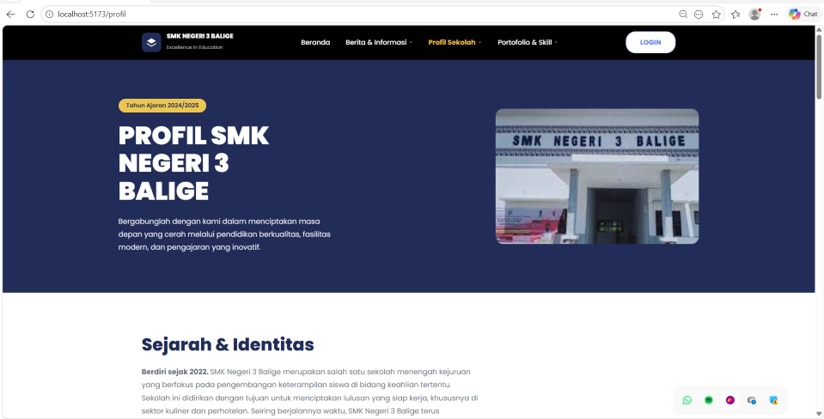

PRJ-01

Sistem Informasi SMK Negeri 3 Balige
Jan – Mei 2026
Full-Stack Contributor & UI/UX Designer
- Merancang antarmuka berpusat pada pengguna hingga implementasi fitur end-to-end untuk sistem informasi sekolah yang komprehensif.
- Menerjemahkan prototipe Figma interaktif menjadi aplikasi web responsif dengan Vite dan aplikasi mobile dengan Android Studio, menjaga alur pengguna tetap mulus di berbagai peran (admin, guru, siswa).
- Turut membangun logika backend dan arsitektur basis data dengan PostgreSQL/MySQL untuk penanganan data yang aman dan query performa tinggi.
- Menulis SRS, merancang Use Case & ERD, dan aktif dalam sprint planning untuk menjembatani konsep desain dengan eksekusi teknis.
Laravel
Flutter
PostgreSQL
Docker
Maestro
Repo · Mobile (Flutter)
Repo · Backend (Laravel)
Repo · Frontend Web